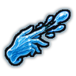
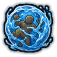
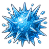
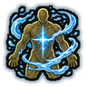

Technique trees › Clans and bloodlines
Hozuki clan
10 techniques in the Clan tab.
Needs the Hozuki gene.
Suika no Jutsu: Hydrification CB
Chakra 20 to 35. Turn the body to water for an hour: blades and bullets splash through. Water Absorption lasts longer and also heals.
Suika no Jutsu: Hydrification CB
Chakra 20 to 35. Turn the body to water for an hour: blades and bullets splash through. Water Absorption lasts longer and also heals.
Turn the body to water for an hour: blades and bullets splash through. Water Absorption lasts longer and also heals.
| Rank | Chakra | Cooldown | Class level |
|---|---|---|---|
| C | 20 | 1.6 hours | 3 |
| B | 35 | 2 hours | 10 |

Suiteppō: Water Gun CB
Chakra 13 to 39. Flick bullets of water from the fingertips. The double-handed version fires more and hits harder.
Suiteppō: Water Gun CB
Chakra 13 to 39. Flick bullets of water from the fingertips. The double-handed version fires more and hits harder.
Flick bullets of water from the fingertips. The double-handed version fires more and hits harder.
| Rank | Chakra | Cooldown | Class level |
|---|---|---|---|
| C | 13 | 7.5 s | 4 |
| B | 39 | 10 s | 9 |

Zerii Osaeru: Jelly Capture C
Chakra 20. Engulf an enemy in a body of thick water and hold them.
Zerii Osaeru: Jelly Capture C
Chakra 20. Engulf an enemy in a body of thick water and hold them.
Engulf an enemy in a body of thick water and hold them.
| Rank | Chakra | Cooldown | Class level |
|---|---|---|---|
| C | 20 | 25 s | 5 |
Kujabaima: Giant's Arm B
Chakra 25. Pump water into one arm to swell it into a huge fist for half an hour of brutal punches.
Kujabaima: Giant's Arm B
Chakra 25. Pump water into one arm to swell it into a huge fist for half an hour of brutal punches.
Pump water into one arm to swell it into a huge fist for half an hour of brutal punches.
| Rank | Chakra | Cooldown | Class level |
|---|---|---|---|
| B | 25 | 1.2 hours | 8 |

Supaiku Tama: Spiked Ball C
Chakra 20. Burst outward as a ball of water spikes, stabbing everyone close.
Supaiku Tama: Spiked Ball C
Chakra 20. Burst outward as a ball of water spikes, stabbing everyone close.
Burst outward as a ball of water spikes, stabbing everyone close.
| Rank | Chakra | Cooldown | Class level |
|---|---|---|---|
| C | 20 | 20 s | 6 |
Jelly Wall B
Chakra 30. A dome of thick jelly-water around a spot swallows enemy shots for twenty seconds.
Jelly Wall B
Chakra 30. A dome of thick jelly-water around a spot swallows enemy shots for twenty seconds.
A dome of thick jelly-water around a spot swallows enemy shots for twenty seconds.
| Rank | Chakra | Cooldown | Class level |
|---|---|---|---|
| B | 30 | 1.2 hours | 9 |
Medusa Surge BA
Chakra 35 to 50. Lash out with tendrils of high-pressure water that whip across a wide arc.
Medusa Surge BA
Chakra 35 to 50. Lash out with tendrils of high-pressure water that whip across a wide arc.
Lash out with tendrils of high-pressure water that whip across a wide arc.
| Rank | Chakra | Cooldown | Class level |
|---|---|---|---|
| B | 35 | 30 s | 11 |
| A | 50 | 30 s | 15 |

Kaishin Shimasu: Regeneration CB
Chakra 25 to 40. Draw in water to knit the body back together.
Kaishin Shimasu: Regeneration CB
Chakra 25 to 40. Draw in water to knit the body back together.
Draw in water to knit the body back together.
| Rank | Chakra | Cooldown | Class level |
|---|---|---|---|
| C | 25 | 1.2 hours | 7 |
| B | 40 | 1.2 hours | 12 |
Dadang: Great Defense Jelly A
Chakra 50. Become almost entirely water for ten minutes: nearly untouchable.
Dadang: Great Defense Jelly A
Chakra 50. Become almost entirely water for ten minutes: nearly untouchable.
Become almost entirely water for ten minutes: nearly untouchable.
| Rank | Chakra | Cooldown | Class level |
|---|---|---|---|
| A | 50 | 6 hours | 14 |
Jiga Nami: Self Wave S
Chakra 90. S-rank: the user becomes a tidal wave and crashes over a wide arc.
Jiga Nami: Self Wave S
Chakra 90. S-rank: the user becomes a tidal wave and crashes over a wide arc.
S-rank: the user becomes a tidal wave and crashes over a wide arc.
| Rank | Chakra | Cooldown | Class level |
|---|---|---|---|
| S | 90 | 4.8 hours | 18 |
Chakra is the technique's base cost, the number in its def. In play it is multiplied by the pawn's chakra energy usage multiplier, which traits (chakra artificer 90%, volatile conduit 110%), World of Naruto genes and jutsu enhancements change, so the technique window can show a slightly different number for each ninja. Cooldowns are in-game time, as the technique window shows them, and the pawn's cooldown stat shortens or lengthens them. World of Naruto gives every ninja a base of 100 maximum chakra; genes and traits change it.